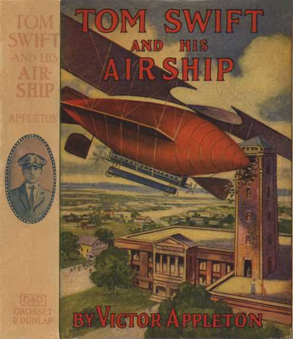
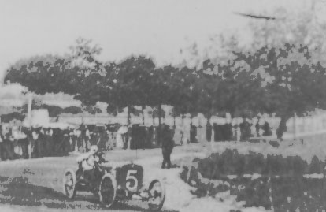

Une nouvelle de la série Tom Swift et [une invention], cette fois avec le "Nuage Rouge"
un énorme dirigeable doté d'ailes de biplan
Si la merveilleuse machine volante est bien le fruit du cerveau de Tilinghast... ce gentleman a raison de
vouloir garder le secret. Comparée à son invention, la machine volante des frères Wright, considérés jusqu'ici
comme les chefs de file de l'aéronautique, semble bien rudimentaire.... Tilinghast riposte en annonçant
qu'il présentera sa machine au salon aérien de Boston en février... mais en fait on ne la verra jamais.
A Chattanooga (Tennessee), un mystérieux appareil aérien
blanc est observé passer au-dessus de la ville, venant du sud "MysteriousAir Craft Is Seen", Daily Review de Decatur (Illinois), 15 janvier 1910.
A Chattanooga (Tennessee), un appareil semblable à celui de
la veille est vu allant vers le nord "Mysterious Air Craft Is Seen", Daily
Review de Decatur (Illinois), 15 janvier 1910.
A Chattanooga (Tennessee), un appareil semblable à
celui de la veille est vu venant du nord et allant vers le sud-est, disparaissant au-dessus de Missionary Ridge
"Mysterious Air Craft Is Seen", Daily
Review de Decatur (Illinois), 1910-01-15.
A Paragould (Arkansas), des milliers
de personnes voient un grand aéronef, transportant 3 ou 4 passagers, et une sorte de phare puissant à 1000
pieds, tournant un moment au-dessus du sud de la ville Gazette de Paragould (Arkansas) < "Passed
Over Paragould", Daily News de Galveston (Texas), 17 janvier 1910.
[les citoyens de] Winnipeg [furent] effarés par une comète Il s'agit de la comète de Halley flamboyante : un corps céleste d'apparence
extraordinaire devient visible dans le ciel de l'Ouest : observé par des citoyens : considéré être de
1ère magnitude -- les astronomes sont mystifiés par l'apparition soudaine Winnipeg Free Press, 21 janvier < Many Mysteries by John Robert Colombo (c.2001 ISBN 189630804x Colombo & Company), p. 101"Mysterious comet puzzles the world" 22 janvier"Comet alarms St. Peter's Indians" 7 février.
Saltcoats, Sask., Jan. 21 - La comète était pleinement visible ici la nuit dernière au sud-ouest et fut vue
à nouveau cette nuit à peu près au mêêroit, mais plus tard environ. Elle fut
visible pendant seulement quelques minutes en raison d'un banc des nuages obstruant la vueTélégramme de Saltcoats, Saskatchewan, 22 janvier < Many Mysteries by John Robert Colombo (c.2001 ISBN 189630804x Colombo & Company), p. 104
A Invercargill (Nouvelle Zélande), plusieurs témoins, dont le
curé, le maire et un policier, ont vu 1 objet en forme de cigare qui planait à une altitude de 30
m. Un homme apparaît à une porte latérale, et on l'entend crier quelques mots dans une langue inconnue.
L'ouverture se referme, l'objet accéléra et on le perdit de vue Stuart, 24.
 Photographie prise en France
Photographie (ci-contre) de l'entrée n° 5 dans la Course de la Coupe Catalane sur une piste en France. Un objet
étrange et non identifié semble se dégager au-dessus des arbres surplombant les spectateurs. On ne sait si le
photographe a vu l'objet et s'il a voulu l'avoir sur sa photo.
Près de Wolf Rock, lors du voyage de Port Talbot à Bastis, le paquebot
Trafalgar est frôlé par un bolide qui le magnétise, l'enveloppant d'une lueur bleutée "Article sur l'incident de
Trafalgar", Nieuwe Rotterdamse
Courant de Rotterdam (Pays Bas), édition du soir, 1910-03-23.
Le docteur I. Plemely, professeur de mathématiques à Cirnovti (URSS), voit un corps céleste brillant approcher depuis le Sud avec une vitesse
croissante. L'objet monte 40 ° et après avoir réduit de vitesse s'en va vers le Nord-Nord-Ouest, disparaissant
dans un nuage à une élévation de 20 °. L'objet a brillé durant . Le professeur van Hepperberg de Vienne calculera les détails paraboliques sur la
base de 3 positions que l'observateur dessinera et arrivera à la conclusion qu'il a pu avoir un diamètre de 100
m. Victor Anestin, rédacteur-en-chef du magazine scientifique Orion dans lequel le récit apparaît, met en avant
le fait que l'objet ne pouvait être uêe (méteore) en raison des éléments de vitesse, décélération, changement de
direction, angle de chute de 45 à 20 °, disparition et ascension, etc. Hobana, I. & Julien Weverbergh archive.
Le docteur Prudhomme, médecin exerçant à Nancy (France)
voit, comme 3 autres témoins, une chose comparable se déplacer lentement et silencieusement dans le ciel. Il
déclare que certains changements brusques dans le déplacement de cette lumière semblaient dûs à un
gouvernail.
A Clyde (New York), un couple voit une machine les survoler. Un
inventeur du coin est soupçonné, avec l'espérance qu'il rende le village célèbre "Mysterious
Airship Report Gives Clyde Aviation Fever", Post-Standard de Syracuse (New York), 10 juin 1910.
À Denver (Colorado), 2 hommes voient
un "aéroplane" survoler la ville à grande vitesse "Denver People See
Mysterious Aeroplane", Daily News de Des Moines (Iowa), 9 juillet 1910.
A Chateaugay (New York), un certain
nombre de résidents voient un phénomène passer au-dessus du village, voguant très rapidement vers le nord-est.
Ils ne savent dire s'il s'agit d'un aéronef ou d'un ballon "Home
Matters", Record de Chateaugay (New York), 22 juillet 1910.
On évoque les essais du monoplan de Blériot à Didsbury pour expliquer les observations récentes "Flying Machine Tried In
Alberta", Herald de Lethbridge (Alberta), 7 octobre 1910, p. 3.
Près du lac Badwater, un fermier est
effrayé par un objet dans le ciel "Saw Airship At Grassy
Lake", Herald de Lethbridge (Alberta), 2 novembre 1910, p. 2.
A Swift Current (Saskatchewan, Canada), 1 machine
volante transportant des lumières rouge et verte à l'extrémité arrière et un projecteur puissant est vue
survolant la ville "Flying Dutchman
Crosses Canada", Daily News de St. John's (Newfoundland), 9 novembre 1910.
A Wichita (Kansas), un aéronef
passe au-dessus de la ville vers le sud-est tôt à une vitesse estimée de 30 miles/h, à 300 pieds de haut, avec
son pilote est clairement visible "Mysterious Airship
Sighted in Kansas", Tribune de Oakland (Californie), 23 Novembre 1910.
Au musée de Salzbourg (Autriche), on ne retrouve plus trace du cube métallique
découvert . De plus, les archives du musée pour la période allant de 1886 à 1910 se sont aussi
volatilisées.
Un grand objet en forme de cigare est
observé au-dessus de Huntsville (Alabama) et Chattanooga (Tennessee), éclairant les villes de son projecteur puissant UFO Roundup 4-36.
Dans la ville de Gravelbourg du Saskatchewan, en 1910, une ligne d'empreintes de pas
humaines fut trouvée dans du granite qui fut formé des millions d'années avant que l'homme apparaisse sur la
Terre...Dash, Mike, Borderlands : the ultimate exploration of the unknown. New York: Dell Publishing, 2000. Library of Congress Card n° 99-37203. ISBN 0440236568. p. 22.